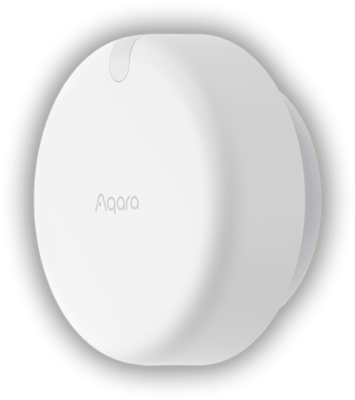
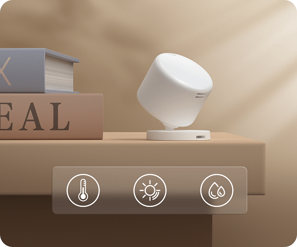

Guide · Sensors
Aqara presence sensor in Home Assistant: FP2 vs FP300 (2026)
An Aqara presence sensor answers the question a motion sensor can't: is somebody still in the room? PIR sensors fire when a body moves across their field of view, then go quiet while you sit reading. Radar — mmWave — keeps sensing a person who is breathing but not walking, and the two Aqara models that do it reach Home Assistant by two completely different roads.
Short version: the Aqara Presence Sensor FP2 is a mains-powered Wi-Fi unit that maps a room into zones and comes into Home Assistant through the HomeKit Device integration. The Aqara Presence Multi-Sensor FP300 is a battery device that talks Thread or Zigbee, adds temperature, humidity and illuminance, and joins Home Assistant as a Matter device — no zone map. They are not interchangeable, and picking the wrong one is the usual mistake.

What mmWave presence sensing actually gives you
Radar presence sensors look for small movements — a chest rising, a hand on a keyboard — rather than gross motion. Aqara says the FP2 handles people who are present but stationary, claims that temperature does not affect its accuracy, and calls it "small pet and robot vacuum-friendly". That last claim matters in a real house: a radar that reacts to every cat walking past is worse than the PIR it replaced.
The practical effect is that "turn the lights off when the room is empty" becomes reliable. With PIR you learn to wave at the ceiling. With radar the light stays on while you read and drops a configurable period after you leave.
FP2 vs FP300, side by side
| Spec | Presence Sensor FP2 | Presence Multi-Sensor FP300 |
|---|---|---|
| Radio | Wi-Fi | Thread, Zigbee, Bluetooth |
| Power | Mains, recessed USB-C | 2 × CR2450 batteries, replaceable |
| Sensing | mmWave radar, room divided into zones | Dual PIR plus 60 GHz mmWave radar |
| Coverage | One unit covers up to 40 m² (about 430 sq ft) | 120° field of view, up to 6 m range |
| People | Up to 5 detected at once | Not specified on the product page |
| Environment sensors | Light sensor only | Presence, motion, illuminance, temperature, humidity |
| Battery life (Aqara figures) | Not applicable | Up to 3 years in Zigbee, up to 2 years in Thread |
| Mounting | Magnetic stand, ceiling or vertical, IPX5 | 42 × 42 × 50 mm, indoor, −10 to 50 °C |
| Home Assistant path | HomeKit Device integration | Matter, over Thread |
Sources for every row are the two Aqara product pages, linked at the bottom of this article.
FP2 in Home Assistant: the HomeKit Device route
The FP2 is not integrated by an Aqara-made Home Assistant add-on. Aqara says it is "exposed as multiple sensors within third-party ecosystems, including HomeKit (and Home Assistant), Amazon Alexa, Google Home" — and the HomeKit half is what Home Assistant uses. The HomeKit Device integration "allows you to connect accessories with the 'Works with HomeKit' logo to Home Assistant".
- Get the pairing code before you start. It is printed on the device or its packaging, and the Home Assistant docs are blunt: "There is no way to recover this if you do not have it."
- Unpair it from any Apple Home or Aqara Home HomeKit setup. The docs require the device to be "not paired with another HomeKit controller".
- Put it on Wi-Fi and power it over USB-C. The port is recessed, and the magnetic stand lets you angle it at the room or hang it from a ceiling.
- Add it in Home Assistant via Settings, Devices & services, Add integration, HomeKit Device. The docs cover adding over Ethernet/Wi-Fi, Bluetooth or Thread — for the FP2 it is the network path.
- Place it, then build zones. Aqara's zone map comes from the Aqara app; each zone then shows up as a separate presence entity you can trigger on. That is the whole trick: one sensor per zone, so the desk zone can hold the desk light while the door zone runs the hallway automation.
Do not confuse HomeKit Device with the HomeKit Bridge integration, which points the other way and exposes Home Assistant devices to Apple Home.
Why bother with the FP2's zone map? Aqara pitches it as a replacement for multiples: "PIR Sensor x N, Light Sensor x 1" — several infrared sensors and a light sensor in one box. In a large open-plan room that is the difference between one ceiling device and four wired sensors. Aqara rates the unit at up to 5 people at once, so a family living room stays inside spec. Fall detection and alerts are advertised features, though I would not treat a radar on a shelf as a medical device.
Power and placement are unglamorous and decisive. The FP2 is IPX5, so Aqara supports humid rooms such as bathrooms and outdoor use under a roof, with its own caveat on the outdoors. Radar sees through thin partitions less gracefully than through air; aim it at the room you care about, not at a hallway you don't.
FP300 in Home Assistant: Thread and Matter

The FP300 is the interesting one for Home Assistant because Aqara names Home Assistant explicitly. In Thread mode the sensor pairs to "a thread-enabled Matter Controller", and the list is Apple Home, Google Home, Alexa, Home Assistant, SmartThings and Homey — with no Aqara hub in the chain.
Two pieces of infrastructure have to exist, and Aqara's page only guarantees one of them. Home Assistant's Matter integration docs explain that Matter "defines how to control smart home devices on a Wi-Fi or Thread network", and that a Thread border router "forwards traffic from the devices in the Thread network to devices outside that network". So: a Matter controller (Home Assistant, with the Matter integration and a Thread border router it can use) and a border router in radio range. If you have neither, that is a separate purchase — see our Thread network explainer for what the pieces do.
- Check your Thread side first. Confirm Home Assistant has a Thread border router it can reach before you buy; the sensor is useless without one.
- Pick the mode. Thread mode needs no Aqara hub. Zigbee mode does — see the next section.
- Commission with the Companion app or a pairing code. The Matter docs describe adding through the iOS or Android Companion app or with a pairing code; commissioning uses Bluetooth, so keep the phone near the sensor.
- Expect a multi-admin world. Matter supports multi-fabric, so the same FP300 can be joined to Home Assistant and another controller at once — useful if one member of the house lives in Apple Home.
Aqara's own trading table says Thread mode exposes occupancy, illumination, temperature and humidity (Alexa loses one of them). Several tuning options — radar sensitivity, absence confirmation period — are listed as "Aqara Home and Home Assistant only", which is a quiet compliment: the two places where you can actually tune the sensor are the vendor app and the local server.
The battery claims are lab claims, and worth reading precisely: two CR2450 cells, up to 3 years in Zigbee mode and up to 2 years in Thread, measured at roughly 240 data points a day "based on 4 h presence plus light, temperature and humidity". A busy hallway that reports presence all day will not match that, and neither will aggressive reporting intervals.
FP300 in Zigbee mode: the hub question
Aqara states that Zigbee mode requires an Aqara hub and the Aqara Home app, and that Matter compatibility then arrives "through an Aqara Hub with Matter bridge functionality". That is a real architectural difference: in Thread mode the sensor is a native Matter device; in Zigbee mode it is a Zigbee device behind a bridge.
Aqara's page does not claim Zigbee2MQTT support. This matters because the tempting move — pair the FP300 straight to a Zigbee coordinator and skip the hub — is unconfirmed by the manufacturer. Until Zigbee2MQTT lists the model, treat it as an experiment. If you want a battery Zigbee sensor in Home Assistant with no vendor bridge, that is a different shopping list; our Zigbee coordinator guide covers the radio side.
Which one to buy
Aqara Presence Sensor FP2 — for rooms with a floor plan
Pick the FP2 when the automation depends on where someone is: desk lamp on in the study corner, ambient light off near the sofa, hallway light following a path. One unit, one power outlet, up to 40 m² of coverage, per-zone entities in Home Assistant, plus a light sensor good enough to hold lights off in daylight. Check Aqara Presence Sensor FP2 on Amazon.
Aqara Presence Multi-Sensor FP300 — for battery and environment
Pick the FP300 when you cannot run power to the corner, when you also want temperature and humidity in the same entity set, or when you are building on Thread and Matter deliberately. Accept the trade: no zone map, a 6 m range and a 120° cone, and a dependency on Thread infrastructure you must already own. Check Aqara Presence Multi-Sensor FP300 on Amazon.
Neither — if you only need motion
If a plain motion sensor has been fine and the complaint is coverage rather than stillness, a second PIR is cheaper. Presence radar earns its price in rooms where people sit still: offices, sofas, bathrooms, workshops.
The gotchas worth knowing before you buy
Two radios, two architectures. The FP2 is mains Wi-Fi with a zone map. The FP300 is battery Thread or Zigbee with environment sensors and no map. Any comparison that treats them as the same product at two prices is wrong.
Thread is not Matter. Home Assistant's own docs warn that "Thread devices don't necessarily support Matter". The FP300 in Thread mode does, per Aqara; a generic Thread sensor might not. Buy the combination, not the radio.
Local automation has a caveat on the FP2. Aqara says on-device automation runs without the cloud only when the other devices in the automation are Aqara or Apple Home compatible. In Home Assistant the automations run locally by construction — but the Aqara app stays in the loop for configuration and firmware, so it is not a zero-app device.
Losing the pairing code loses the FP2. Photograph the label before you mount the sensor on a ceiling.
Light threshold automations are the sleeper feature. Aqara's own example is IF presence detected AND illuminance under 400 lux THEN turn on lamp. That single rule removes most of the "lights on in an empty sunlit room" complaints, and both Aqara models can feed it — the FP2 through its built-in light sensor, the FP300 through its 5-in-1 sensor set.
Skip the FP1E as a reference point. Aqara's product page for the older wired FP1E currently serves placeholder copy, so there are no specs to compare against. If you see a comparison table elsewhere quoting FP1E numbers, it did not come from the manufacturer page as it stands today.
FAQ
Does the Aqara FP2 work with Home Assistant without an Aqara hub?
Yes. The FP2 is a Wi-Fi device that exposes itself to HomeKit, and Home Assistant picks it up through the HomeKit Device integration. No Aqara hub is involved, but you do need the HomeKit pairing code printed on the device or its packaging.
Aqara FP2 vs FP300: which one should I put in my Home Assistant setup?
Buy the FP2 when you need to know where in a room someone is, because it maps a room up to 40 square metres into zones. Buy the FP300 when you want a battery sensor that reports presence plus light, temperature and humidity, and you already have a Thread border router and Matter controller or an Aqara hub.
Does the Aqara FP300 work over Thread with Home Assistant, and do I need a Thread border router?
Aqara lists Home Assistant among the Matter controllers the FP300 can pair to in Thread mode, with no Aqara hub required. Thread traffic still has to reach the rest of your network through a Thread border router, so you need one in radio range as well as a Matter controller.
Can an mmWave presence sensor detect someone sitting still, reading or watching TV?
Yes. That is the point of the radar. Aqara says the FP2 detects people who are present but not moving, and describes the FP300 as detecting motion and stationary presence, which is what motion-only PIR sensors miss.
Can I use the FP300 in Zigbee mode with Zigbee2MQTT, or do I need an Aqara hub?
Aqara's product page says Zigbee mode requires an Aqara hub and the Aqara Home app. It does not claim Zigbee2MQTT support, so treat direct pairing to a Zigbee coordinator as unconfirmed until Zigbee2MQTT lists the device. Thread mode is the documented route into Home Assistant.
Do Aqara presence sensors need a cloud account or an internet connection to keep working?
Automations built in Home Assistant run on your own hardware. Aqara does say the FP2 only keeps its automations on-device when the other devices involved are Aqara or Apple Home compatible, and the Aqara app remains in the loop for configuration and firmware on both models.
Related
More on the sensors and radios in this article: Devices; The Thread network, explained; The best Zigbee hub for Home Assistant; Best water leak sensors.
As an Amazon Associate, HA News earns from qualifying purchases.